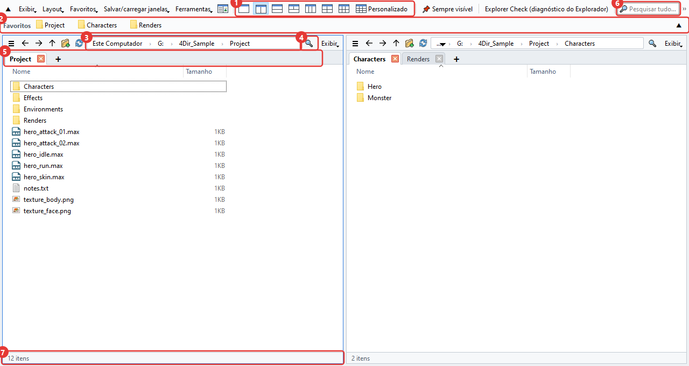
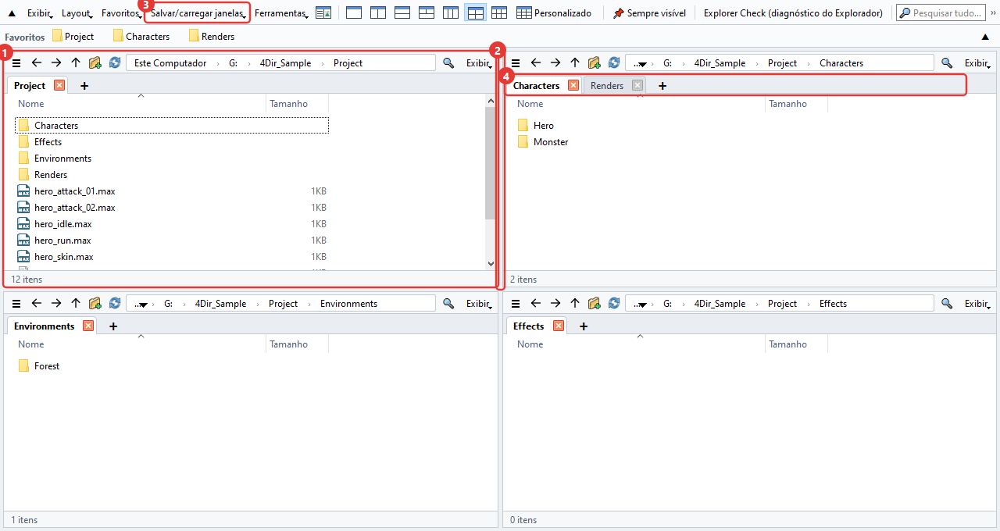
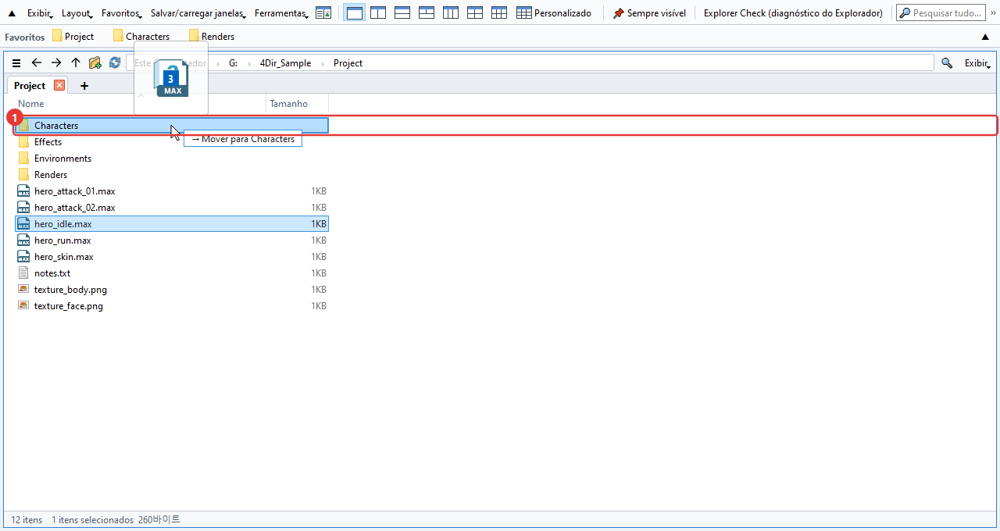
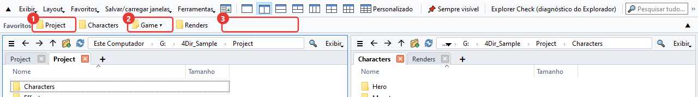
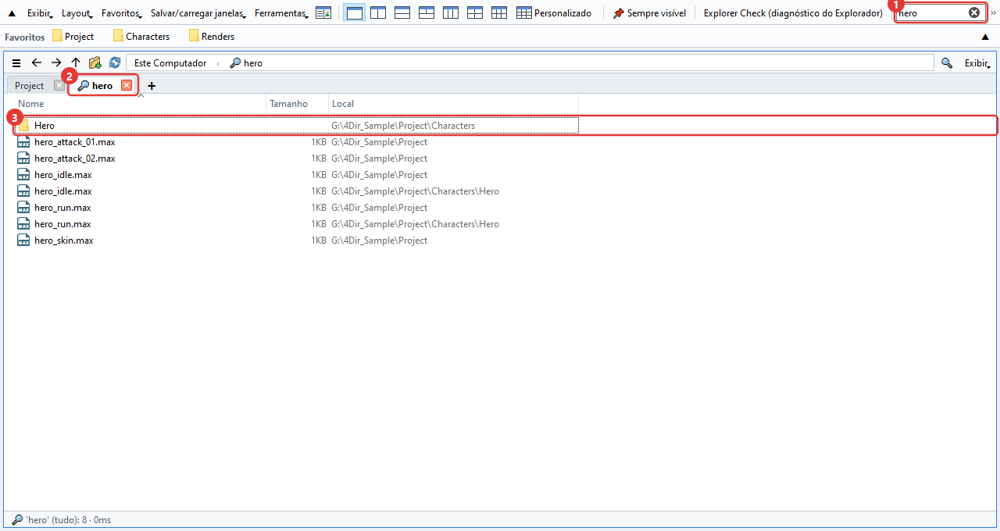
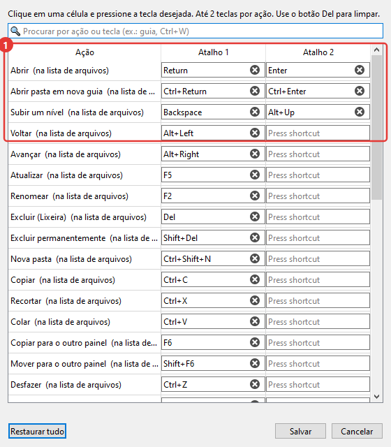
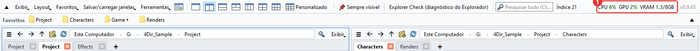
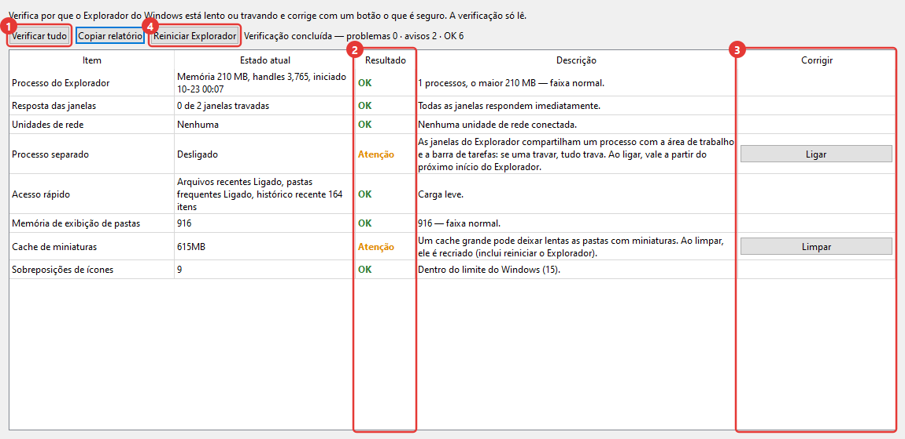

Como usar o 4Dir
Aqui está o que mais se usa, mais ou menos na ordem em que você vai precisar. Os números vermelhos nas imagens são os mesmos do texto. Os atalhos são quase iguais aos do Explorador do Windows, então quem já usava o Explorador já conhece metade disto.
A janela principal
Com o 4Dir você deixa várias pastas abertas lado a lado numa janela só. De cima para baixo:

- Botões de layout. 1, 2, 3, 4 e 6 painéis com um clique. O último, Personalizado, deixa você escolher quantas colunas e linhas quiser (até 5×4).
- Barra de favoritos. Arraste para cá uma pasta que você usa muito e ela vira um botão. Clicando com o botão direito no botão, dá para renomear ou remover.
- Barra de endereços. Clique em qualquer parte do caminho para ir direto àquela pasta. Clique no espaço vazio à direita para digitar o caminho.
- Filtro. Filtra a pasta atual pelo nome. Ctrl+F
- Guias. Cada painel tem as suas. Abra com + ou Ctrl+T e feche com Ctrl+W.
- Pesquisar tudo. Procura arquivos pelo nome em unidades inteiras. Mais detalhes abaixo, em 'Pesquisar'.
- Barra de status. Mostra o número de itens e quantos você selecionou, com o tamanho.
Painéis e guias
Pense em cada painel como um pequeno Explorador. Cada um guarda as próprias guias e pastas.

- O último painel em que você clicou fica com borda azul. Os atalhos valem para esse painel.
- Arraste a divisa entre os painéis para mudar o tamanho.
- Em Salvar/carregar janelas você salva com um nome a disposição atual dos painéis e as guias. Ter um para cada trabalho ajuda bastante.
- As guias podem ser arrastadas para mudar a ordem ou ir para outro painel; soltando fora da janela, viram uma janela nova. Com o botão direito também dá para abrir no Explorador do Windows.
Ao fechar e abrir o 4Dir de novo, os últimos painéis e guias voltam do jeito que estavam. Se você reiniciar o PC com o 4Dir aberto, ele abre de novo no próximo login (dá para desligar isso no menu Ferramentas).
Mover e copiar arquivos
Do mesmo jeito que no Explorador. Ao arrastar, a pasta de destino fica destacada e aparece ao lado algo como '→ Mover para …', mostrando o que vai acontecer.

- Pasta de destino. Na mesma unidade, move; em outra unidade, copia. Soltando com Ctrl pressionado, copia; com Shift, move.
Com mais de um painel, nem precisa arrastar. Selecione e aperte F6 para copiar para o outro painel, ou Shift+F6 para mover.
Errou? Ctrl+Z. Desfaz, um por vez, renomear, nova pasta, mover, copiar e excluir para a lixeira.
Renomeando com F2, aperte ↓ para ir direto para o próximo arquivo. Selecionando vários arquivos e apertando F2, abre a janela Renomear em lote.
O menu do botão direito é o próprio menu do Windows. Os menus do compactador ou do TortoiseSVN aparecem igual ao Explorador.
Clique com o botão direito em uma imagem .webp → Converter WebP → Salvar como PNG / Salvar como JPG. Um arquivo novo aparece na mesma pasta e o original fica (apague você mesmo se não precisar). Também dá para converter vários de uma vez.
Favoritos
As pastas que você mais usa ficam como botões na barra de cima. Ela começa vazia e só mostra o que você mesmo adicionar (é separada do Acesso rápido do Explorador do Windows).

- Botão de favorito. Um clique abre a pasta no painel atual. Com o botão direito há Abrir em nova guia, Renomear e Excluir. Arrastando arquivos para cima do botão, eles são movidos ou copiados para aquela pasta.
- Botão de grupo (▾). Junta vários favoritos num botão só. Um clique abre a lista. Solte uma pasta no meio de um botão de grupo para ela entrar nesse grupo.
- Solte uma pasta num espaço vazio ou entre dois botões e surge um botão novo ali mesmo. Arrastando os botões, você muda a ordem. A pasta atual entra direto com Ctrl+D.
Se tiver muita coisa para arrumar, abra Favoritos → Organizar favoritos. Excluir vários de uma vez, mudar a ordem e os nomes, criar grupos e achar pastas que não existem mais, tudo numa janela só. Nada muda até você clicar em Confirmar.
Se os botões não cabem numa linha, clique no ▼ na ponta direita da barra. Ela se abre em várias linhas e mostra tudo (▲ volta para uma linha).
Para aproveitar as pastas fixadas no Explorador do Windows, use Favoritos → Importar Acesso rápido do Explorador do Windows. As que já existem são puladas.
Pesquisar
Digite na caixa de pesquisa lá em cima e a busca começa na hora. Na primeira vez que roda, o 4Dir monta uma lista com os nomes dos arquivos das unidades e, depois disso, só acompanha o que mudou. Por isso é rápido.

- Caixa de pesquisa. Com várias palavras, aparecem só os nomes que têm todas. Curingas como
*.maxtambém funcionam. Ctrl+Shift+F - Os resultados abrem numa guia com uma lupa.
- A coluna 'Local' é a pasta onde o arquivo está. Clique duas vezes para abrir, ou botão direito → Abrir local do arquivo para ir até a pasta.
Quais unidades pesquisar você escolhe em Ferramentas → Escopo da pesquisa. Unidades de rede vêm desligadas.
Se a lista ainda não estiver pronta ou a pasta estiver fora do escopo, o botão de seta ao lado do filtro procura direto em tudo que está abaixo da pasta atual.
Se você usa SVN
Se a sua pasta de trabalho está no SVN, arquivos e pastas ganham uma marca de status. Com o TortoiseSVN instalado, são os mesmos ícones do Explorador.

- Visto verde: sem alterações. Nas pastas, conta tudo o que tem dentro.
- Exclamação vermelha: modificado. Numa pasta, quer dizer que há alterações não commitadas em algum lugar lá dentro.
- Mais azul: a adicionar (ainda não commitado).
- Interrogação cinza: fora do controle de versão.
Os botões da barra de favoritos ganham as mesmas marcas, então dá para ver lá em cima quais pastas têm coisas não commitadas.
Cópias de trabalho grandes levam alguns segundos na primeira vez. Enquanto isso, a barra de status mostra 'Verificando SVN'. Se não precisar das marcas, desligue Exibir → Mostrar → Mostrar status do SVN.
Mudar os atalhos
Em Ferramentas → Atalhos de teclado você define a tecla de cada função. Cada função aceita até duas teclas.

- Clique na caixa e aperte a tecla que quer usar; muda na hora. Se a tecla já estiver em uso, você é avisado.
Os mais usados: Ctrl+T nova guia, Ctrl+W fechar guia, Ctrl+N nova janela, Ctrl+L barra de endereços, Ctrl+Shift+C copiar caminho, Alt+Enter propriedades.
Ver o uso de CPU e GPU
Serve para ver o quanto o PC está ocupado enquanto renderiza no 3ds Max ou roda um jogo. Os números aparecem à direita da barra de cima.

- CPU: uso do PC inteiro. GPU: uso da placa de vídeo. VRAM: memória da placa de vídeo usada/total (GB). Acima de 60% fica laranja, acima de 85% fica vermelho. Atualiza a cada 1,5 segundo e, passando o mouse por cima, mostra o nome da placa de vídeo.
GPU e VRAM só aparecem em placas NVIDIA. Com outras placas, só aparece a CPU.
O uso da memória do sistema (RAM) não é mostrado. Se precisar, veja o Gerenciador de Tarefas (Ctrl+Shift+Esc).
Para desligar: Exibir → Mostrar uso de CPU·GPU. Com a janela minimizada, a atualização para sozinha. Se a janela for estreita, ele vai para dentro do » no fim da barra de menus.
Diagnóstico do Explorador (Explorer Check)
Uma ferramenta para quando o Explorador do Windows vive travando ou fica lento. Abra pelo Explorer Check (diagnóstico do Explorador) na barra de cima ou pelo menu Ferramentas. A verificação começa assim que abre e só lê, não muda nada.

- Verificar tudo: verifica de novo. Olha a memória do Explorador, a resposta das janelas, unidades de rede, processo separado para janelas de pasta, itens recentes, modos de exibição de pasta guardados, cache de miniaturas, quantidade de ícones de sobreposição, encerramentos forçados recentes e mais.
- Resultado: OK / Atenção / Problema / Info. A coluna ao lado explica o motivo.
- Botão de correção. Só aparece no que dá para corrigir. Ao clicar, ele pergunta de novo e diz o que vai mudar, e só mexe nas configurações e pastas do usuário atual.
- Reiniciar Explorador: fecha e abre de novo o Explorador quando ele trava. As janelas do Explorador abertas serão fechadas.
Com Copiar relatório você copia o resultado como texto. Se for nos perguntar sobre um problema, mande junto que fica mais rápido achar a causa.
Outras coisas
- Claro/escuro e o idioma ficam no menu Exibir. O idioma muda quando você abre o 4Dir de novo.
- Se o 4Dir estiver se comportando de um jeito estranho, clique em Ferramentas → Salvar log para relatar problema e mande o zip gerado para support@4dir.net. Com o log a gente procura a causa.